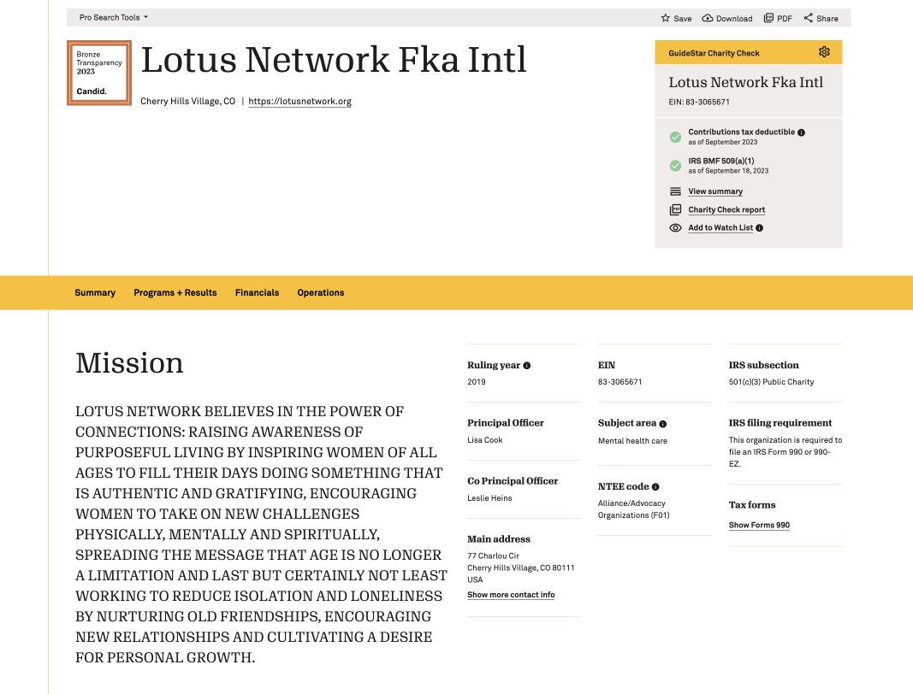
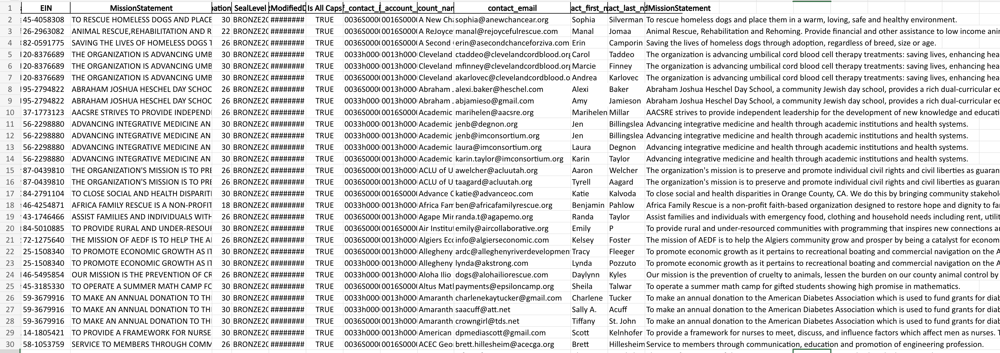
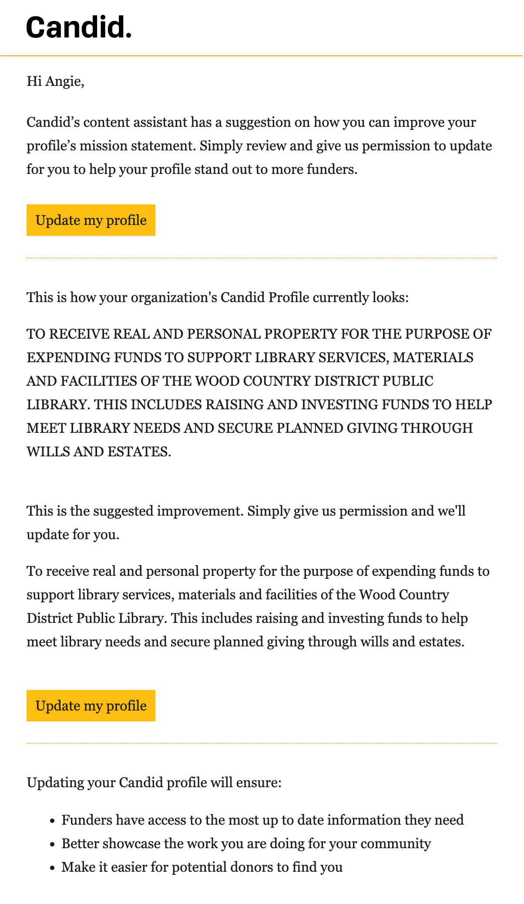
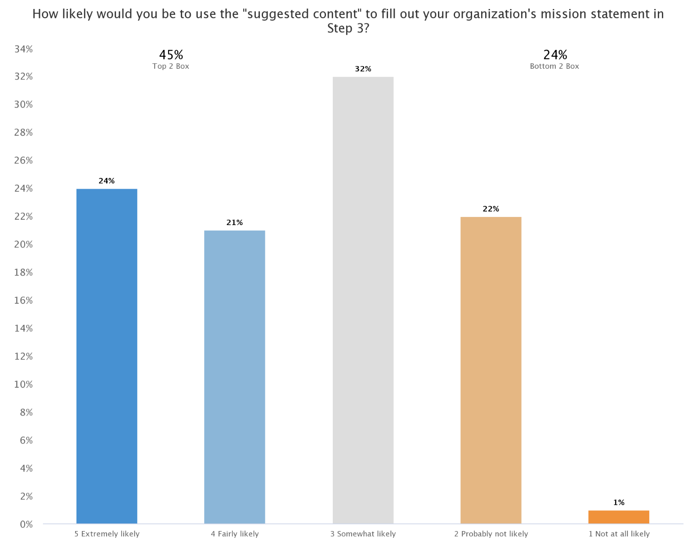
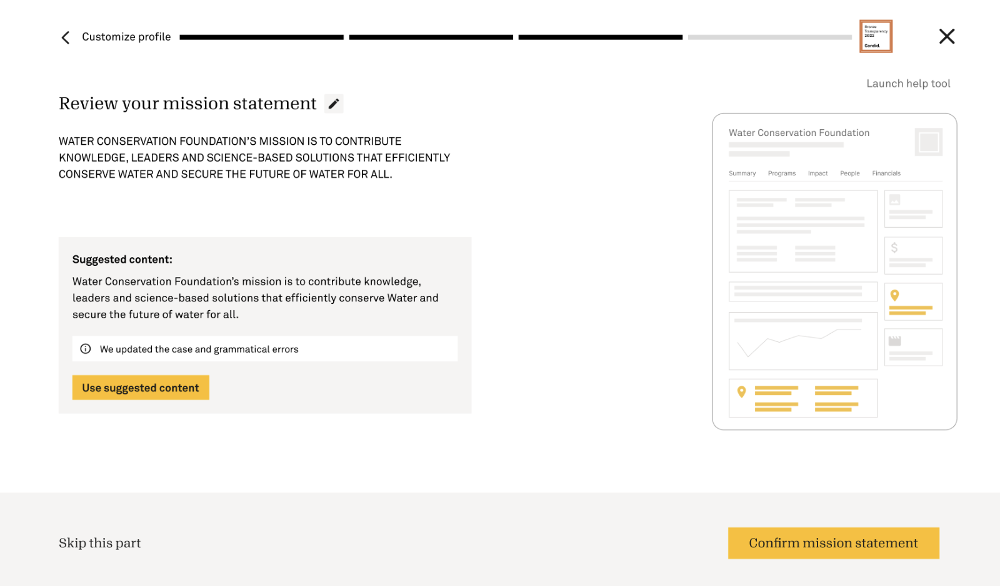
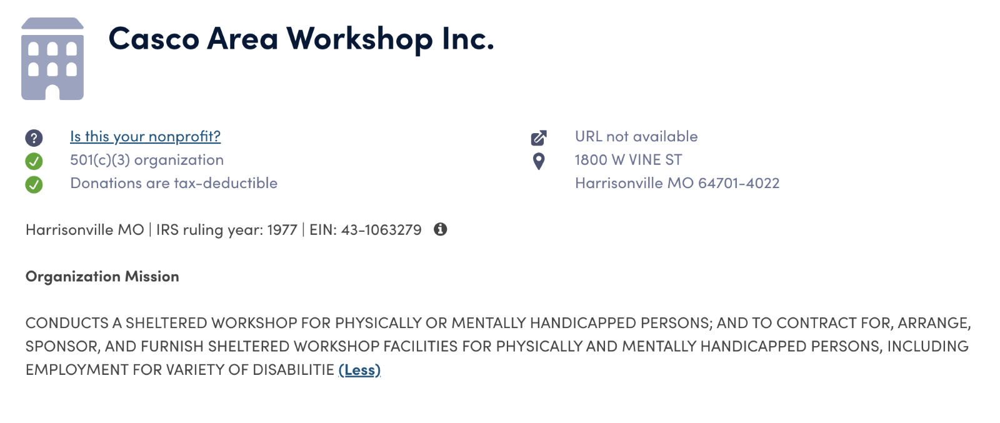
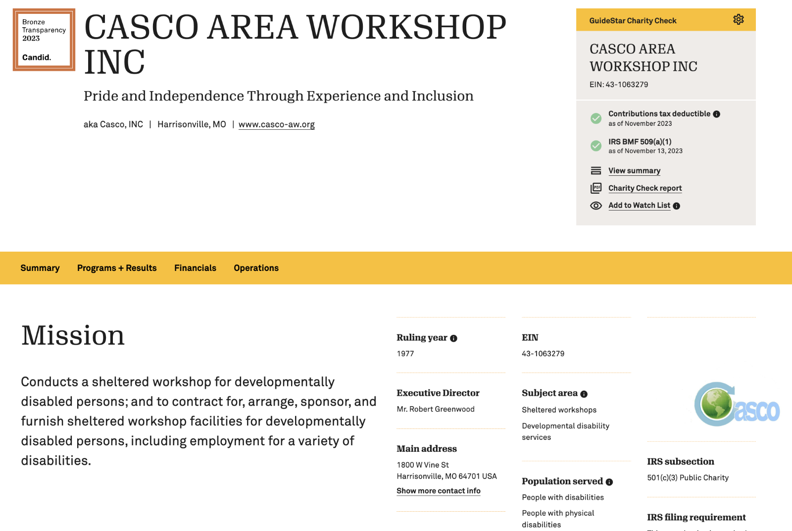

01 · The Problem
Readable profiles shouldn't depend on copywriting staff nonprofits don't have.
29% of organizations on Candid have zero or one employee registered. Updating a profile is already low priority. When the mission statement looks like a tax form, funders scroll past.
Finn from Product noted what we heard in interviews: nonprofits agree their Candid profile could be useful, but polishing mission copy never rises above daily operations. Grantmakers, meanwhile, encounter ALL CAPS blocks that erode trust in both the organization and Candid's data quality.

02 · Innovation Fund Proposal
User content → refine with Gen AI → publish.
I submitted a Stage 1 Innovation Fund proposal to test whether AI-assisted copy refinement could unlock profile updates at scale, starting with proactive email outreach before building in-product tooling.
The hypothesis: if we show profile managers a side-by-side before/after and offer to apply the change for them, we can validate demand before investing in a full Generative Copywriter feature inside the Unified Platform.
- Target users: Nonprofits and foundations on Candid with claimed profiles (~1M addressable organizations).
- Initial scope: Mission statement only; ALL CAPS → sentence case without changing meaning.
- Success metric (proposal): 60% of pilot orgs accept refined content within 3 months.
- Budget ask: $5,000 Innovation Fund · VP sign-off approved.
"The readability of an organization's profile should not undermine the significant impact they are making."
Innovation Fund proposal
03 · Validation
Five steps from spreadsheet to sent email.
We operationalized the pilot as a cross-functional workflow: data selection, AI refinement, human QA, controlled email variants, and manual profile updates after consent.
Generate organization list
1,138 orgs active since July 2022 with mission content in ALL CAPS or with spelling errors, mostly Bronze seal holders.
Refine with ChatGPT
Prompted conversion to sentence case. Autocoder checks ensured meaning stayed intact before outreach.
Human review
Removed bad contact rows; verified original vs. modified statements matched. Final list: 945 organizations.


We A/B tested two consent models: Email 1 asked users to opt in (40.7% permission rate). Email 2 mimicked the desired auto-update flow: click to revoke rather than approve, and reached 89.5% consent, signaling strong appetite for one-click refinement.
04 · Findings
People wanted suggested content, as long as it stayed faithful.
Email validation was paired with UXR survey and interview work on the Unified Platform claims flow, plus legal review of what AI could safely change on public IRS-sourced data.


- Interviews: All participants wanted suggested content if it did not drastically change the original.
- Survey: 45% top-two-box likelihood to use suggested content; ~two-thirds preferred having suggestions presented rather than starting from a blank field.
- Micro-edits mattered: Orgs requested updates even when their mission was only a few words, evidence for an auto-update tool, not just a writing assistant.
05 · Key Decisions
Caps-only refinement: nothing that shifts autocoder meaning.
Autocoder testing on 60 refined rows showed spelling/grammar fixes could change downstream classification. Legal counsel confirmed caps conversion on public IRS data was in bounds; broader paraphrasing would need a new review.
Sentence case only, no grammar rewrites
Spelling corrections altered autocoder tags; we limited v1 to ALL CAPS → sentence case to preserve semantic integrity.
Default-apply with easy revoke
Follow-up email outperformed opt-in by 2×, informed the in-product "Use suggested content" pattern.
In-house LLM evaluation
Data Science tested Falcon and Llama models as a path to production-scale refinement if the project were resourced later, reducing reliance on ChatGPT API costs.

Charity Navigator
GuideStar (pilot refinement)06 · Outcome
Validation succeeded. Build never got the runway.
The pilot proved nonprofits would accept AI-polished copy and preferred Candid to do the work for them. Engineering scoped a small lift to embed caps-only refinement in the data pipeline, but the work was deprioritized when team capacity went to other Unified Platform commitments.
After QA from an initial pool of 1,138 ALL CAPS or error-flagged mission statements.
On "Update my profile," above the 2% success benchmark set for the campaign.
Despite a successful validation and a defined build path, resourcing constraints kept caps-only refinement out of the production pipeline.
"Use suggested content" patterns, consent models, and legal guardrails informed later profile-editing work on the platform.
This was my first time leading an AI innovation initiative at Candid, from proposal and cross-functional coordination through validation, legal review, and engineering handoff. The project did not ship, but it established a responsible framework for Gen AI on organization data and demonstrated that nonprofits would trust Candid to refine their profiles when the changes stayed faithful to the original.